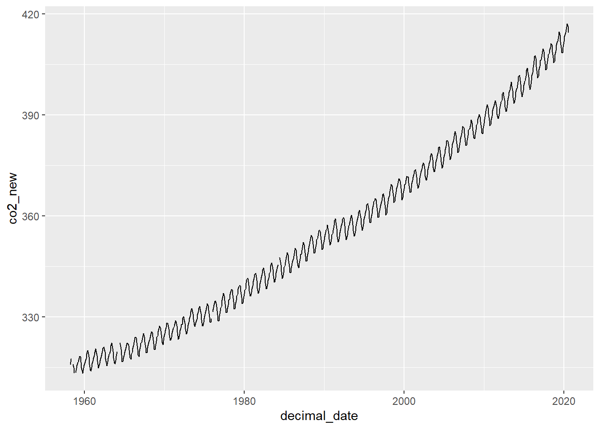
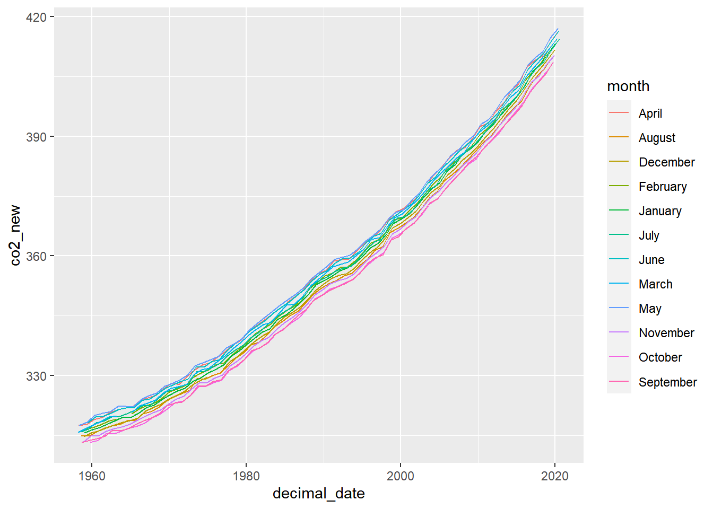
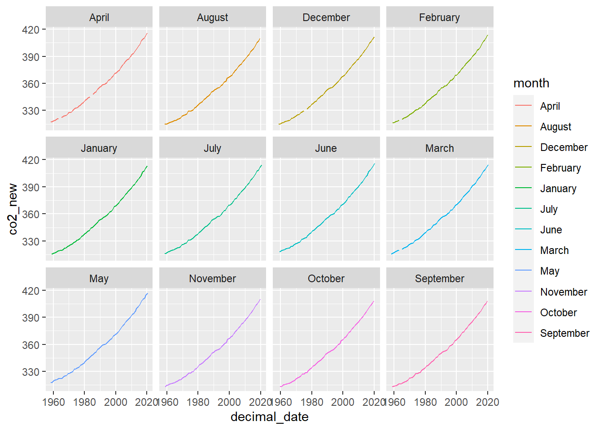

Section 05 Data wrangling
“Tidy datasets are all alike, but every messy dataset is messy in its own way.” - Hadley Wickham
The notes below are modified from the excellent Dataframe Manipulation and freely available on the Software Carpentry website.
Prerequisites
Load the libraries:
##
## Attaching package: 'dplyr'## The following objects are masked from 'package:stats':
##
## filter, lag## The following objects are masked from 'package:base':
##
## intersect, setdiff, setequal, unionTidy data
In this section, we will learn a consistent way to organize the data in R, called tidy data. Getting the data into this format requires some upfront work, but that work pays off in the long term. Once you have tidy data and the tools provided by the tidyr, dplyr and ggplot2 packages, you will spend much less time munging/wrangling data from one representation to another, allowing you to spend more time on the analytic questions at hand.
Tibble
For now, we will use tibble instead of R’s traditional data.frame. Tibble is a data frame, but they tweak some older behaviors to make life a little easier.
Let’s use Keeling_Data as an example:
## year month decimal_date co2 quality
## 1 1958 March 1958.208 315.71 1
## 2 1958 April 1958.292 317.45 1
## 3 1958 May 1958.375 317.50 1
## 4 1958 June 1958.458 -99.99 0
## 5 1958 July 1958.542 315.86 1
## 6 1958 August 1958.625 314.93 1You can coerce a data.frame to a tibble using the as_tibble() function:
## # A tibble: 749 x 5
## year month decimal_date co2 quality
## <int> <chr> <dbl> <dbl> <int>
## 1 1958 March 1958. 316. 1
## 2 1958 April 1958. 317. 1
## 3 1958 May 1958. 318. 1
## 4 1958 June 1958. -100. 0
## 5 1958 July 1959. 316. 1
## 6 1958 August 1959. 315. 1
## 7 1958 September 1959. 313. 1
## 8 1958 October 1959. -100. 0
## 9 1958 November 1959. 313. 1
## 10 1958 December 1959. 315. 1
## # ... with 739 more rowsTidy dataset
There are three interrelated rules which make a dataset tidy:
- Each variable must have its own column;
- Each observation must have its own row;
- Each value must have its own cell;

These three rules are interrelated because it’s impossible to only satisfy two of the three. That interrelationship leads to an even simpler set of practical instructions:
- Put each dataset in a tibble
- Put each variable in a column
Why ensure that your data is tidy? There are two main advantages:
There’s a general advantage to picking one consistent way of storing data. If you have a consistent data structure, it’s easier to learn the tools that work with it because they have an underlying uniformity. If you ensure that your data is tidy, you’ll spend less time fighting with the tools and more time working on your analysis.
There’s a specific advantage to placing variables in columns because it allows R’s vectorized nature to shine. That makes transforming tidy data feel particularly natural.
tidyr,dplyr, andggplot2are designed to work with tidy data.
The dplyr package
The dplyr package provides a number of very useful functions for manipulating dataframes in a way that will reduce the self-repetition, reduce the probability of making errors, and probably even save you some typing. As an added bonus, you might even find the dplyr grammar easier to read.
Here we’re going to cover commonly used functions as well as using pipes %>% to combine them.
Using select()
Use the select() function to keep only the variables (cplumns) you select.
## # A tibble: 749 x 3
## year co2 quality
## <int> <dbl> <int>
## 1 1958 316. 1
## 2 1958 317. 1
## 3 1958 318. 1
## 4 1958 -100. 0
## 5 1958 316. 1
## 6 1958 315. 1
## 7 1958 313. 1
## 8 1958 -100. 0
## 9 1958 313. 1
## 10 1958 315. 1
## # ... with 739 more rows## # A tibble: 749 x 1
## co2
## <dbl>
## 1 316.
## 2 317.
## 3 318.
## 4 -100.
## 5 316.
## 6 315.
## 7 313.
## 8 -100.
## 9 313.
## 10 315.
## # ... with 739 more rowsThe pipe symbol %>%
Above we used ‘normal’ grammar, but the strengths of dplyr and tidyr lie in combining several functions using pipes. Since the pipes grammar is unlike anything we’ve seen in R before, let’s repeat what we’ve done above using pipes.
x %>% f(y) is the same as f(x, y)
## # A tibble: 749 x 3
## year co2 quality
## <int> <dbl> <int>
## 1 1958 316. 1
## 2 1958 317. 1
## 3 1958 318. 1
## 4 1958 -100. 0
## 5 1958 316. 1
## 6 1958 315. 1
## 7 1958 313. 1
## 8 1958 -100. 0
## 9 1958 313. 1
## 10 1958 315. 1
## # ... with 739 more rowsThe above lines mean we first call the Keeling_Data_tbl tibble and pass it on, using the pipe symbol %>%, to the next step, which is the select() function. In this case, we don’t specify which data object we use in the select() function since in gets that from the previous pipe. The select() function then takes what it gets from the pipe, in this case the Keeling_Data_tbl tibble, as its first argument. By using pipe, we can take output of the previous step as input for the next one, so that we can avoid defining and calling unnecessary temporary variables. You will start to see the power of pipe later.
Using filter()
Use filter() to get values (rows):
## # A tibble: 12 x 5
## year month decimal_date co2 quality
## <int> <chr> <dbl> <dbl> <int>
## 1 2000 January 2000. 369. 1
## 2 2000 February 2000. 370. 1
## 3 2000 March 2000. 371. 1
## 4 2000 April 2000. 372. 1
## 5 2000 May 2000. 372. 1
## 6 2000 June 2000. 372. 1
## 7 2000 July 2001. 370. 1
## 8 2000 August 2001. 368. 1
## 9 2000 September 2001. 367 1
## 10 2000 October 2001. 367. 1
## 11 2000 November 2001. 368. 1
## 12 2000 December 2001. 370. 1If we now want to move forward with the above tibble, but only with quality == 1 , we can combine select() and filter() functions:
## # A tibble: 742 x 3
## year co2 quality
## <int> <dbl> <int>
## 1 1958 316. 1
## 2 1958 317. 1
## 3 1958 318. 1
## 4 1958 316. 1
## 5 1958 315. 1
## 6 1958 313. 1
## 7 1958 313. 1
## 8 1958 315. 1
## 9 1959 316. 1
## 10 1959 316. 1
## # ... with 732 more rowsYou see here we have used the pipe twice, and the scripts become really clean and easy to follow.
Using group_by() and summarize()
Now try to ‘group’ monthly data using the group_by() function, notice how the ouput tibble changes:
## # A tibble: 742 x 4
## # Groups: month [12]
## year month co2 quality
## <int> <chr> <dbl> <int>
## 1 1958 March 316. 1
## 2 1958 April 317. 1
## 3 1958 May 318. 1
## 4 1958 July 316. 1
## 5 1958 August 315. 1
## 6 1958 September 313. 1
## 7 1958 November 313. 1
## 8 1958 December 315. 1
## 9 1959 January 316. 1
## 10 1959 February 316. 1
## # ... with 732 more rowsThe group_by() function is much more exciting in conjunction with the summarize() function. This will allow us to create new variable(s) by using functions that repeat for each of the continent-specific data frames. That is to say, using the group_by() function, we split our original dataframe into multiple pieces, then we can run functions (e.g., mean() or sd()) within summarize().
Keeling_Data_tbl %>%
select(year,month,co2,quality) %>%
filter(quality == 1) %>%
group_by(month) %>%
summarize(monthly_mean = mean(co2))## `summarise()` ungrouping output (override with `.groups` argument)## # A tibble: 12 x 2
## month monthly_mean
## <chr> <dbl>
## 1 April 359.
## 2 August 353.
## 3 December 355.
## 4 February 357.
## 5 January 356.
## 6 July 356.
## 7 June 359.
## 8 March 357.
## 9 May 358.
## 10 November 353.
## 11 October 353.
## 12 September 352.Here we create a new variable (column) monthly_mean, and append it to the groups (month in this case). Now, we get a so-called monthly climatology.
You can also use arrange() and desc() to sort the data:
Keeling_Data_tbl %>%
select(year,month,co2,quality) %>%
filter(quality == 1) %>%
group_by(month) %>%
summarize(monthly_mean = mean(co2)) %>%
arrange(monthly_mean)## `summarise()` ungrouping output (override with `.groups` argument)## # A tibble: 12 x 2
## month monthly_mean
## <chr> <dbl>
## 1 September 352.
## 2 October 353.
## 3 November 353.
## 4 August 353.
## 5 December 355.
## 6 January 356.
## 7 July 356.
## 8 February 357.
## 9 March 357.
## 10 May 358.
## 11 June 359.
## 12 April 359.Keeling_Data_tbl %>%
select(year,month,co2,quality) %>%
filter(quality == 1) %>%
group_by(month) %>%
summarize(monthly_mean = mean(co2)) %>%
arrange(desc(monthly_mean))## `summarise()` ungrouping output (override with `.groups` argument)## # A tibble: 12 x 2
## month monthly_mean
## <chr> <dbl>
## 1 April 359.
## 2 June 359.
## 3 May 358.
## 4 March 357.
## 5 February 357.
## 6 July 356.
## 7 January 356.
## 8 December 355.
## 9 August 353.
## 10 November 353.
## 11 October 353.
## 12 September 352.Let’s add more statistics to the monthly climatology:
Keeling_Data_tbl %>%
select(year,month,co2,quality) %>%
filter(quality == 1) %>%
group_by(month) %>%
summarize(monthly_mean = mean(co2), monthly_sd = sd(co2),
monthly_min = min(co2), monthly_max = max(co2),
monthly_se = sd(co2)/sqrt(n()))## `summarise()` ungrouping output (override with `.groups` argument)## # A tibble: 12 x 6
## month monthly_mean monthly_sd monthly_min monthly_max monthly_se
## <chr> <dbl> <dbl> <dbl> <dbl> <dbl>
## 1 April 359. 29.4 317. 416. 3.76
## 2 August 353. 28.3 315. 410. 3.59
## 3 December 355. 28.9 315. 412. 3.70
## 4 February 357. 28.8 316. 414. 3.69
## 5 January 356. 29.0 316. 413. 3.68
## 6 July 356. 29.1 316. 414. 3.67
## 7 June 359. 29.0 318. 416. 3.69
## 8 March 357. 29.1 316. 415. 3.69
## 9 May 358. 29.4 318. 417. 3.70
## 10 November 353. 28.7 313. 410. 3.65
## 11 October 353. 28.3 313. 409. 3.63
## 12 September 352. 28.4 313. 409. 3.60Here we call the n() to get the size of a vector.
Using mutate()
We can also create new variables (columns) using the mutate() function. Here we create a new column co2_ppb by simply scaling co2 by a factor of 1000.
## # A tibble: 749 x 6
## year month decimal_date co2 quality co2_ppb
## <int> <chr> <dbl> <dbl> <int> <dbl>
## 1 1958 March 1958. 316. 1 315710
## 2 1958 April 1958. 317. 1 317450
## 3 1958 May 1958. 318. 1 317500
## 4 1958 June 1958. -100. 0 -99990
## 5 1958 July 1959. 316. 1 315860
## 6 1958 August 1959. 315. 1 314930
## 7 1958 September 1959. 313. 1 313200
## 8 1958 October 1959. -100. 0 -99990
## 9 1958 November 1959. 313. 1 313330
## 10 1958 December 1959. 315. 1 314670
## # ... with 739 more rowsWhen creating new variables, we can hook this with a logical condition. A simple combination of mutate() and ifelse() facilitates filtering right where it is needed: in the moment of creating something new. This easy-to-read statement is a fast and powerful way of discarding certain data or for updating values depending on this given condition.
Let’s create a new variable co2_new, it is equal to co2 when quality==1, otherwise it’s NA:
## # A tibble: 749 x 7
## year month decimal_date co2 quality co2_ppb co2_new
## <int> <chr> <dbl> <dbl> <int> <dbl> <dbl>
## 1 1958 March 1958. 316. 1 315710 316.
## 2 1958 April 1958. 317. 1 317450 317.
## 3 1958 May 1958. 318. 1 317500 318.
## 4 1958 June 1958. -100. 0 -99990 NA
## 5 1958 July 1959. 316. 1 315860 316.
## 6 1958 August 1959. 315. 1 314930 315.
## 7 1958 September 1959. 313. 1 313200 313.
## 8 1958 October 1959. -100. 0 -99990 NA
## 9 1958 November 1959. 313. 1 313330 313.
## 10 1958 December 1959. 315. 1 314670 315.
## # ... with 739 more rowsCombining dplyr and ggplot2
Just as we used %>% to pipe data along a chain of dplyr functions we can use it to pass data to ggplot(). Because %>% replaces the first argument in a function we don’t need to specify the data = argument in the ggplot() function.
By combining dplyr and ggplot2 functions, we can make figures without creating any new variables or modifying the data.
Keeling_Data_tbl %>%
mutate(co2_new = ifelse(quality==1, co2, NA)) %>%
# Make the plot
ggplot(aes(x=decimal_date, y=co2_new)) +
geom_line()
As you will see, this is much easier than what we have done in Section 3. This is the power of a tidy dataset and its related functions!
Let’s plot CO2 of the same month as a function of decimal_date, with the color option:
Keeling_Data_tbl %>%
mutate(co2_new = ifelse(quality==1, co2, NA)) %>%
# Make the plot
ggplot(aes(x=decimal_date, y=co2_new, color=month)) +
geom_line()## Warning: Removed 2 row(s) containing missing values (geom_path).
Or plot the same data but in panels (facets), with the facet_wrap function:
Keeling_Data_tbl %>%
mutate(co2_new = ifelse(quality==1, co2, NA)) %>%
# Make the plot
ggplot(aes(x=decimal_date, y=co2_new, color=month)) +
geom_line() +
facet_wrap(~ month)## Warning: Removed 2 row(s) containing missing values (geom_path).
The tidyr package

The ‘long’ layout or format is where:
- each column is a variable
- each row is an observation
For the ‘wide’ format, each row is often a site/subject/patient and you have multiple observation variables containing the same type of data. These can be either repeated observations over time, or observation of multiple variables (or a mix of both).
You may find data input may be simpler, or some other applications may prefer the ‘wide’ format. However, many of R’s functions have been designed assuming you have ‘longer’ formatted data.
Here we use tidyr package to efficiently transform the data shape regardless of the original format.
‘Long’ and ‘wide’ layouts mainly affect readability. For humans, the ‘wide’ format is often more intuitive since we can often see more of the data on the screen due to its shape. However, the ‘long’ format is more machine-readable and is closer to the formatting of databases.
Long to wide format with spread()
Spread rows into columns:
Keeling_Data_tbl_wide <- Keeling_Data_tbl %>%
select(year,month,co2) %>%
spread(month, co2)
Keeling_Data_tbl_wide## # A tibble: 63 x 13
## year April August December February January July June March May November October
## <int> <dbl> <dbl> <dbl> <dbl> <dbl> <dbl> <dbl> <dbl> <dbl> <dbl> <dbl>
## 1 1958 317. 315. 315. NA NA 316. -100. 316. 318. 313. -100.
## 2 1959 318. 315. 316. 316. 316. 317. 318. 317. 318. 315. 313.
## 3 1960 319. 316. 316. 317. 316. 318. 320. 318. 320. 315 314.
## 4 1961 319. 317. 317. 318. 317. 319. 320. 319. 321. 316. 315.
## 5 1962 321. 317. 318. 319. 318. 320. 321. 320. 321. 317. 315.
## 6 1963 321. 318. 318. 319. 319. 320. 321. 320. 322. 317. 316.
## 7 1964 -100. 319. 319. -100. 320. 320. 322. -100. 322. 318. 317.
## 8 1965 322. 319. 319. 320. 319. 321. 322. 321. 322. 319. 317.
## 9 1966 324. 320. 321. 322. 321. 322. 324. 322. 324. 320. 318.
## 10 1967 324. 321. 322. 322. 322. 323. 324. 323. 325 321. 319.
## # ... with 53 more rows, and 1 more variable: September <dbl>Wide to long format with gather()
Gather columns into rows:
Keeling_Data_tbl_2000 <- Keeling_Data_tbl_wide %>%
filter(year == 2000) %>%
gather("MONTH","co2")
Keeling_Data_tbl_2000## # A tibble: 13 x 2
## MONTH co2
## <chr> <dbl>
## 1 year 2000
## 2 April 372.
## 3 August 368.
## 4 December 370.
## 5 February 370.
## 6 January 369.
## 7 July 370.
## 8 June 372.
## 9 March 371.
## 10 May 372.
## 11 November 368.
## 12 October 367.
## 13 September 367In-class exercises
Exercise #1
Please go over the notes once again, make sure you understand the scripts.
Exercise #2
Using the tools/functions covered in this section, to solve More about Mauna Loa CO2 in Lab 01.
Further reading
- Data Wrangling with dplyr and tidyr Cheat Sheet
- Dataframe Manipulation with dplyr
- Dataframe Manipulation with tidyr
- R for Data Science, see chapter 10 and 12.
- Data wrangling with R, with a video